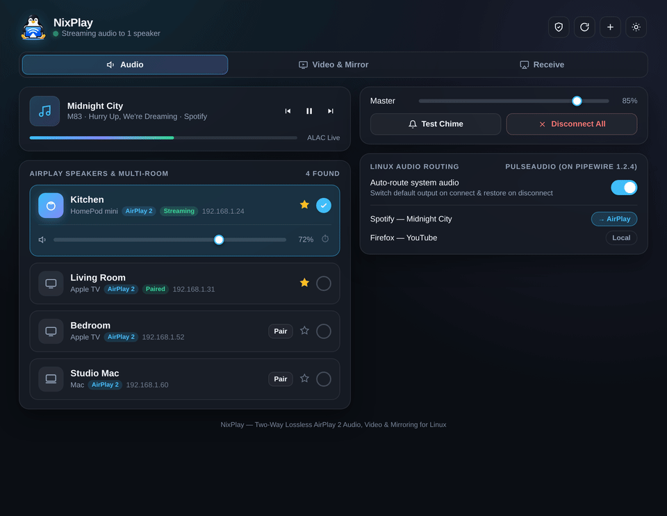
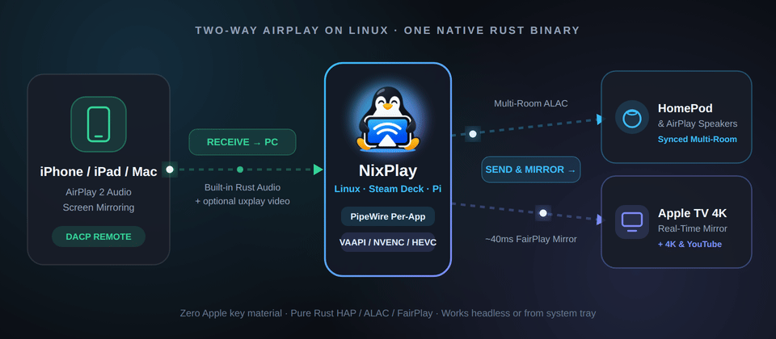
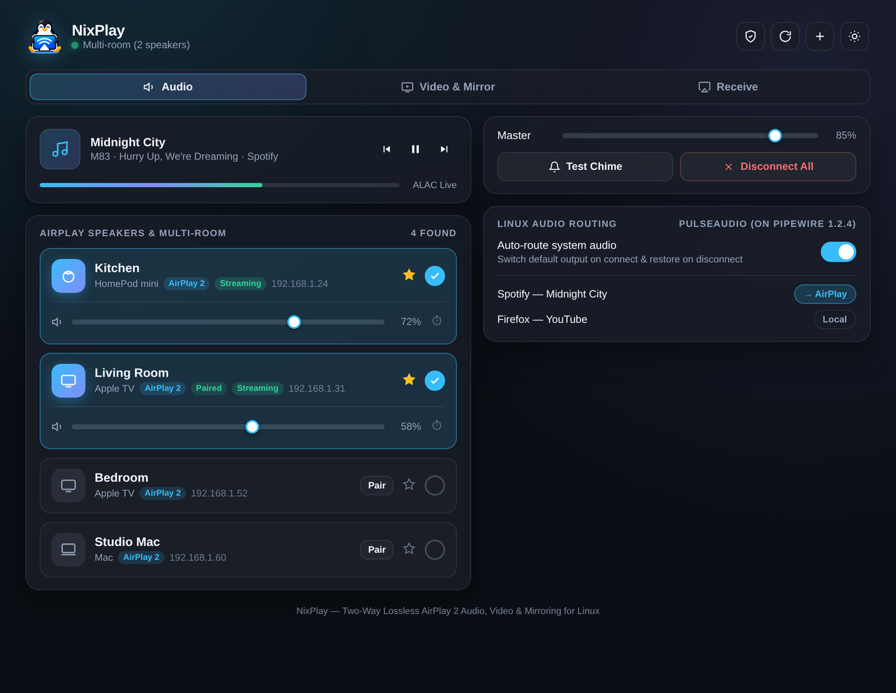
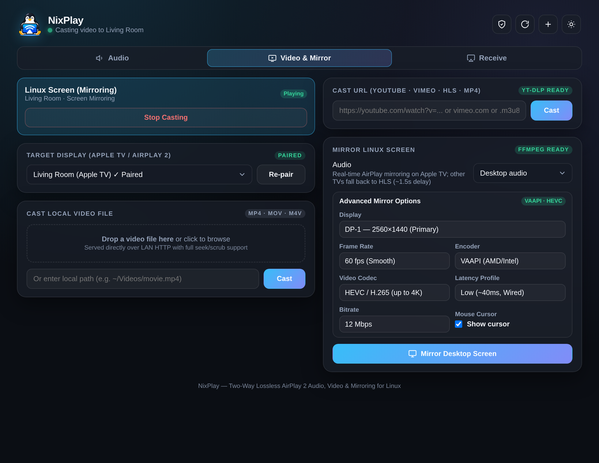
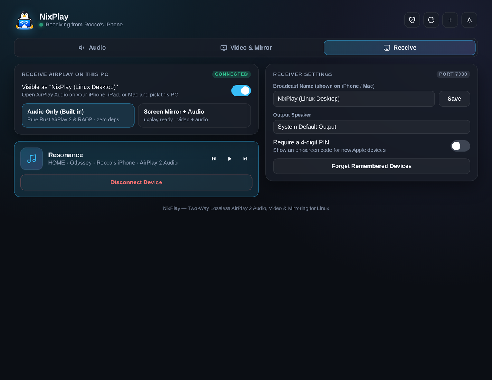
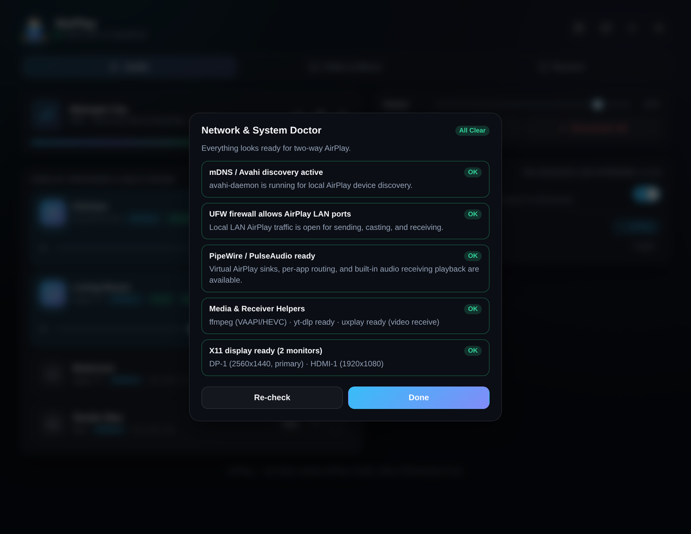

Per-App PipeWire Routing
Send only Spotify to your HomePods while keeping Discord or game audio on your headphones. Auto-switches on connect and cleanly restores your speakers on disconnect.
Stream lossless multi-room audio to HomePods, mirror your desktop to Apple TV in real time (~40ms), cast YouTube & 4K videos, and receive AirPlay straight from your iPhone, iPad, or Mac — all in one friendly native app.
$curl -fsSL https://raw.githubusercontent.com/mrsco/nixplay/main/install.sh | bash
~/.local/bin/nixplay · Safe for immutable SteamOS · Zero C-dev headers needed
For years, using Apple HomePods, Apple TVs, and iPhones alongside a Linux desktop meant stitching together half-working daemons, config files, and command-line hacks.
If you wanted to play Linux audio on a HomePod, PulseAudio's legacy RAOP module only spoke AirPlay 1 (with 2-second lag and frequent dropouts on modern HomePods). If you wanted to mirror your Linux desktop to an Apple TV in real time, there simply wasn't a friendly open-source tool — only laggy HLS workarounds or paid macOS/Windows apps.
And if you wanted to beam music from your iPhone back to your Linux PC's speakers, you had to install, compile, and configure yet another background service.
NixPlay was built to end that fragmentation: one self-contained Rust binary with a polished Control Center, system tray, CLI, and headless web UI that speaks modern AirPlay 2 & AirPlay 1 in both directions — with zero Apple proprietary key material.
NixPlay turns your Linux PC, Steam Deck, or Raspberry Pi into a complete AirPlay hub — equally great as a sender and a receiver.

Receive AirPlay 2 & RAOP audio from iPhone, iPad, or Mac with zero external packages — complete with artwork, track info, PIN protection, and DACP Play/Pause/Skip remote controls. Need full iPhone screen mirroring? Flip to uxplay mode in one click.
Stream 44.1 kHz / 16-bit lossless audio to HomePods, Apple TVs, Macs, and Sonos speakers simultaneously with per-speaker volume, -500ms..+500ms sync tuning, and per-app PipeWire routing.
Push your live Linux screen with desktop (or desktop + mic) audio using real FairPlay mirroring, VAAPI/NVENC hardware encoding, optional 4K HEVC, multi-monitor selection, and automatic HLS fallback.
Every detail — from PipeWire virtual sinks to Tailscale VPN bypasses — was built around how people actually run Linux.
Send only Spotify to your HomePods while keeping Discord or game audio on your headphones. Auto-switches on connect and cleanly restores your speakers on disconnect.
Pick any monitor on multi-display setups, run 60 fps with low GPU/CPU overhead via VAAPI or NVENC, enable HEVC (H.265) for up to 4K, and auto-tune wired vs. Wi-Fi latency.
Server-side HAP pairing (transient or 4-digit PIN), pure-Rust ALAC decoder, live DMAP metadata & cover art, output speaker selector, and DACP remote buttons for your iPhone.
Drag-and-drop MP4/MOV/M4V files served over a built-in LAN HTTP Range server with live scrubbing, or paste any YouTube/Vimeo/Twitch link (auto-resolved via yt-dlp with ?t= start times).
Automatically bypasses VPN/Tailscale NAT onto direct LAN links for rock-solid UDP sync, auto-recovers after sleep/Wi-Fi roaming, and includes a read-only Network Doctor to spot firewall or mDNS blockers.
User-space install touches zero root files on SteamOS. Run headless with --bind 0.0.0.0 --no-tray and control your whole home's speakers from any phone browser.
Runs as a crisp GTK window, a system tray icon, or a responsive browser app — with full Dark & Light themes.




Other Linux tools each solve one slice of AirPlay. NixPlay brings the entire two-way experience together in a single binary.
| Capability | NixPlay | PipeWire / PA RAOP | Shairport Sync | UxPlay | OwnTone |
|---|---|---|---|---|---|
| AirPlay 2 Multi-Room Audio (Send) | ✓ Native ALAC + Sync | AirPlay 1 only | — | — | ✓ Library only |
| Per-App Linux Audio Routing | ✓ Built-in UI | Manual pavucontrol | — | — | — |
| Real-Time FairPlay Screen Mirroring (Send) | ✓ ~40ms + VAAPI/HEVC | — | — | — | — |
| Local Video & YouTube / HLS Casting | ✓ Built-in + yt-dlp | — | — | — | — |
| Receive AirPlay Audio from iPhone / Mac | ✓ Built-in Pure Rust | — | ✓ Receiver only | ✓ Receiver only | — |
| Receive Screen Mirroring (Video) | ✓ Optional uxplay mode | — | — | ✓ Receiver only | — |
| Control Center UI + Tray + Headless Web + CLI | ✓ All four | — | CLI / daemon | CLI only | Web music server |
| Single Binary, SteamOS-Safe Install | ✓ Zero C-dev deps | System package | C build / root | C + GStreamer | Server daemon |
Compiles a single native Rust binary in user space (~/.local/bin/nixplay) — no root writes, no C-dev packages required.
# 1. One-line install (no sudo required for the binary) curl -fsSL https://raw.githubusercontent.com/mrsco/nixplay/main/install.sh | bash # 2. Launch Control Center + System Tray (or pick "NixPlay AirPlay" from your app menu) nixplay serve --open # 3. Optional: install uxplay if you also want to receive iPhone video screen mirroring sudo apt install uxplay
# Installs strictly into ~/.local/bin — SteamOS updates never wipe it curl -fsSL https://raw.githubusercontent.com/mrsco/nixplay/main/install.sh | bash # Desktop Mode: launch from the app menu or run: nixplay serve --open # Control speakers from your phone while docked in Game Mode: nixplay serve --bind 0.0.0.0
# Run headless and control multi-room speakers + AirPlay receiving from any phone browser nixplay serve --bind 0.0.0.0 --no-tray # Auto-start on boot with systemd user service: mkdir -p ~/.config/systemd/user cp desktop/nixplay.service ~/.config/systemd/user/ systemctl --user enable --now nixplay.service
nixplay scan # Discover AirPlay 2 & RAOP devices nixplay pair "Living Room" # One-time 4-digit Apple TV PIN pairing nixplay stream "Kitchen" "Living Room" # Synchronized multi-room audio nixplay cast "Living Room" ~/Videos/movie.mp4 # Cast local video or YouTube URL nixplay cast-screen "Living Room" --fps 60 --encoder vaapi --codec hevc --latency low nixplay receive --name "Linux Desk" --pin # Receive AirPlay audio on this PC nixplay doctor # Run read-only network & system diagnostics